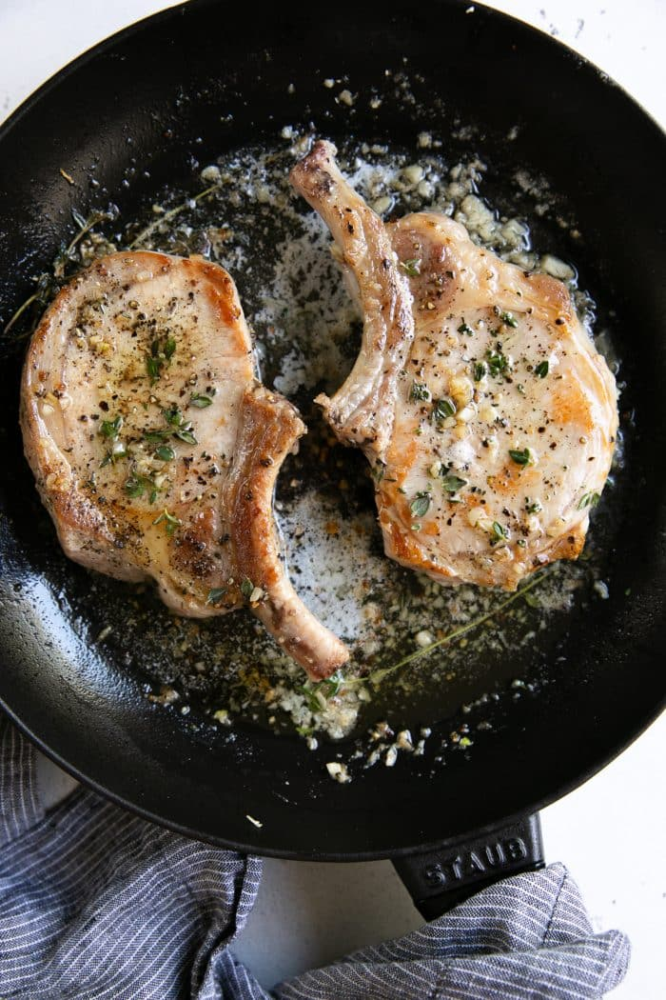

Home
Garlic Butter Pork Chops

Description
Juicy garlic butter Pork Chop Recipe with golden seared edges is ready in just 15 minutes! Enjoy this crazy delicious and tender pork chop recipe with all your favorite side dish recipes for a fast and flavorful easy dinner the whole family will love.
Ingredients
- 4 bone-in porkchops
- Coarse salt
- Fresh ground black pepper
- 1 tablespoon olive oil
- 3 tablespoons butter
- 2 springs fresh thyme
- 6 cloves garlic
Instructions
- Generously season both sides of pork chops with salt and pepper.
- Heat the olive oil in a large skillet over medium-high heat. Once the pan is hot, and the chops, 2 tablespoons butter, and 2-3 sprigs of fresh thyme to the skillet. Cook the pork chops for 3-4 minutes on each side, or until the outside is golden and the internal temperature reads 145°F (or a little below) with a digital meat thermometer.
- Add the remaining butter, minced garlic, and chopped thyme to the skillet. Use a spoon to drizzle the garlic butter sauce over the pork chops before flipping the pork chops over and spooning the garlic butter over the pork chops on the other side. Repeat for 1-2 minutes.
- mmediately remove pork chops from the skillet and serve with all your favorite sides. Enjoy!